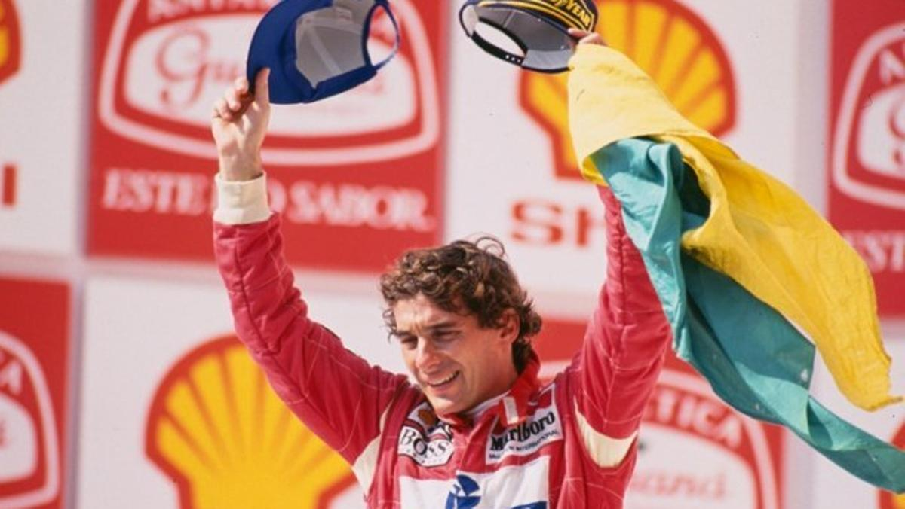

24 años sin Ayrton Senna, el dios de la Fórmula 1

Hoy se cumplen 24 años de la muerte de Ayrton Senna, uno de los mejores pilotos de Fórmula 1. Y con motivo de esta triste efeméride, vamos a recordar cómo sucedió todo en aquel fatídico 1 de mayo de 1994.
Como homenaje también repasaremos la figura y trayectoria del mito brasileño. Se trata de un corredor único que con su talento y carisma, marcó un hito y el camino para las generaciones venideras.
Su legado sigue presente en millones de deportistas y aficionados que todavía hoy le recuerdan en cada carrera. Así era el deportista que conversaba con Dios en Eau Rouge.
Para ir calentando motores, te dejamos en estos enlaces las mejores carreras de Ayrton Senna, obras maestras del automovilismo, así como su épica victoria en Brasil 1991, la anécdota que protagonizó en el GP USA 1984, los coches de F1 de Ayrton Senna y el día que probó un monoplaza de la IndyCar
Un monoplaza incómodo y nervioso
Después de unas arduas y largas negociaciones, Ayrton Senna fichó por la escudería Williams en 1994. Esa demora propició que el nuevo monoplaza no se adaptara perfectamente a las dimensiones del paulista. El cockpit resultaba demasiado angosto y pequeño para albergar el cuerpo del corredor, cuyas piernas se topaban con la barra de la dirección.
A esto se sumaba un problema técnico preocupante. El Williams FW16, desposeído de todas las ayudas electrónicas que lo habían convertido en un coche imbatible en 1993, tenía unas reacciones nerviosas y, en ocasiones, imprevisibles. Resultaba muy complicado de controlar.
Difícil inicio de temporada
Ayrton Senna llegó a la escudería de Grove como el fichaje estrella y estaba obligado a ganar el Mundial. Sin embargo, las cosas comenzaron a torcerse desde la primera cita de la temporada, el GP de Brasil 1994, disputado en su amado Circuito de Interlagos.
Allí en su país, donde estaba considerado un ídolo de masas, abandonó por un trompo tras salir desde la pole. El vencedor fue un joven alemán llamado Michael Schumacher que llegaba empujando fuerte y con un coche demasiado veloz.
En la segunda cita, el GP del Pacífico 1994, celebrado en Japón, todo fue un calco de la anterior. Aunque arrancó desde la primera posición de la parrilla, se quedó fuera de combate en la curva 1 al recibir un golpe por detrás, mientras Schumacher vencía en el Autódromo de Aida (Okayama). 2-0.
San Marino, cita con la muerte
Ayrton Senna llegó a la tercera parada del año, el GP de San Marino 1994, con la presión derivada de los dos ceros en su casillero, frente a los triunfos del Káiser.
Desde el primer momento se le vio muy incómodo en el FW16, una bestia traicionera e ingobernable. Algo no iba bien en el vetusto y peligroso Autódromo Enzo y Dino Ferrari en Ímola (Italia).
El día de los entrenamientos libres, el viernes, Rubens Barrichello sufrió un brutal accidente. Su coche salió literalmente volando hasta impactar contra una valla.
Solo la milagrosa intervención del doctor de la F1, Sid Watkins, evitó que perdiera la vida. La tragedia comenzaba a sobrevolar el asfalto italiano donde la muerte acechaba en cada curva.
Al día siguiente, el sábado, y durante la sesión de clasificación oficial, el corredor austriaco Roland Ratzenberger falleció después de sufrir un impacto escalofriante con su Simtek.
El paddock enmudeció con las imágenes del suceso y una profunda consternación se apoderó de todos los pilotos, mecánicos, comisarios y aficionados. La tristeza y el pesimismo reinaban en la caravana del Gran Circo, convertida ya en un funeral.
Senna, desolado por lo sucedido, se sinceró con el Profesor Watkins, su gran amigo -quizás el único- en el Gran Circo. El médico, al ver el estado de conmoción y angustia del brasileño, le instó a retirarse juntos para dedicarse a la pesca, la afición favorita de ambos.
Sin embargo, el brasileño le respondió que hay cosas que no se pueden controlar y que disputaría la carrera. El mito presentía algo en su fuero interno. Antes de dormirse, esa noche, leyó varios pasajes de la Biblia.
El día de la tragedia
Aquel 1 de mayo, la victoria se la llevó la muerte, sabedora que se cobraría la vida de una de las máximas estrellas de la velocidad. Ya en la salida de la carrera (14:00 horas) se produjo un accidente terrible. El Benneton Ford del finés J.J. Lehto se quedó clavado en la arrancada y fue embestido por el Lotus-Mugen del portugués Pedro Lami.
Inmediatamente el safety car, ¡un Fiat Tempra!, salió a pista. Detrás de él se formó un trenecito compuesto por todos los bólidos que rodaban muuuuy despacio. De hecho, los monoplazas realizaban giros bruscos de un extremo a otro de la pista, tratando de calentar los neumáticos.
Algunos corredores se quejaron de esta circunstancia por las radios, indicando que las gomas habían perdido temperatura y adherencia. Después de cinco vueltas, el coche de seguridad abandonó el asfalto y se reanudó la prueba con Ayrton Senna primero, seguido de cerca por Schumacher.
Solo dos giros más tarde, a las 14:17 (hora peninsular española) llegó la tragedia. El Williams azul y blanco del brasileño se salió recto en la maldita curva de Tamburello camino de la eternidad. Tenía solo 34 años de edad.
Tras unos instantes interminables y con el brasileño inerte dentro del monoplaza, llegó el doctor. Ante la gravedad de la situación, le practicó una estéril traqueotomía sobre el asfalto.
Pero no se pudo hacer nada por salvarle. La barra de la suspensión había atravesado el casco de Ayrton Senna provocándole unas lesiones incompatibles con la vida. Dentro del monoplaza se encontró una bandera austríaca con la que quería rendir tributo a su colega muerto el día anterior.
De repente, el mundo del motor, especialmente de la F1, se había quedado huérfano, sin su héroe. La consternación e impacto mundiales por la noticia fueron inmensos, sobre todo en Brasil. A la llegada del cortejo fúnebre a Sao Paolo, millones de paisanos se echaron a las calles para despedir a su ídolo.
19 Abr 2018 22:15